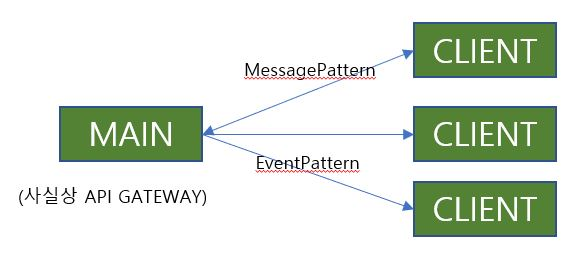

Nestjs - 9. 마이크로서비스
Written on June 21st , 2022 by zaimy8. 마이크로서비스
1) 설치
AMQP 방식 사용
yarn add @nestjs/microservices
yarn add amqplib
yarn add amqp-connection-manager
2) 활용

구성도MAIN
module.ts
import { Transport, ClientsModule } from '@nestjs/microservices';
...
@Module({
imports: [
ClientsModule.register([
//rabbitmq
{
name: 'ITEM_MICROSERVICE',
transport: Transport.RMQ,
options: {
urls: ['amqp://id:pw@localhost:5672'],
queue: 'cats_queue',
queueOptions: {
durable: true,
},
},
},
//tcp
{
name: 'MATH_SERVICE',
transport: Transport.TCP
},
]),
],
...
service.ts
import { ClientProxy } from '@nestjs/microservices';
...
@Injectable()
export class AppService {
constructor(
@Inject('ITEM_MICROSERVICE') private readonly client: ClientProxy,
) {}
async getService() {
const k = await this.client.send({ role: 'ttt' }, '1');
return k;
}
}
CLIENT
main.ts
const app = await NestFactory.createMicroservice<MicroserviceOptions>(
AppModule,
{
transport: Transport.TCP,
},
);
await app.listen();
(rabbitMq)
const app = await NestFactory.createMicroservice<MicroserviceOptions>(
AppModule,
{
transport: Transport.RMQ,
options: {
urls: ['amqp://id:pw@localhost:5672'],
queue: 'cats_queue',
queueOptions: {
durable: true,
},
},
},
);
await app.listen();
controller.ts
@MessagePattern({ role: 'ttt' })
createItem(a: string) {
console.log(a);
return '1';
}
(응답없는 서비스)
@EventPattern({ role: 'ttt' })
createItem(a: string) {
console.log(a);
}
Feel free to share!